Kana Uchida’s portfolio

英会話スクール リニューアル提案（班制作）
制作時間：1日
制作範囲：webサイト用挿絵イラスト
使用ツール：
Main illustrations
トップページのメインビジュアルとして使用
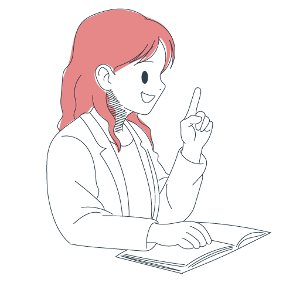
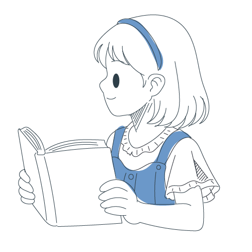
Other illustrations
メインビジュアルのサブイラスト
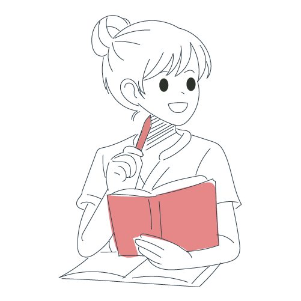
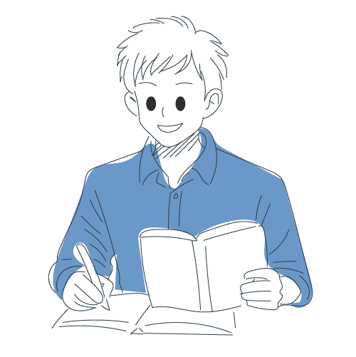
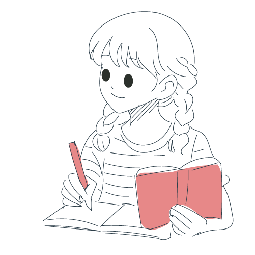
スクール説明用イラスト
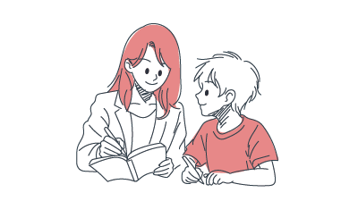

コース説明用イラスト
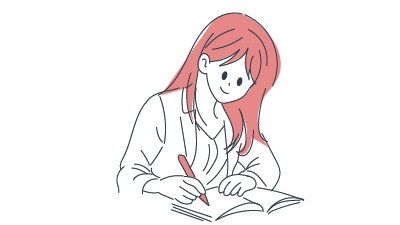

生徒さんの声用イラスト

 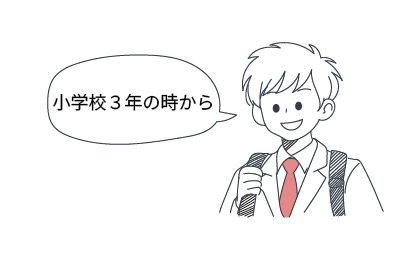
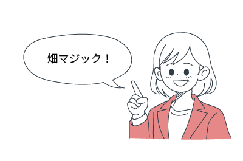
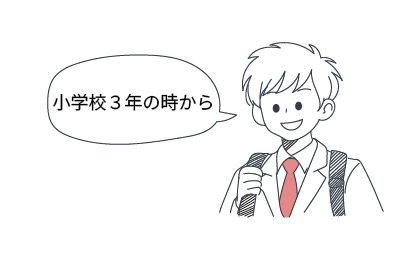
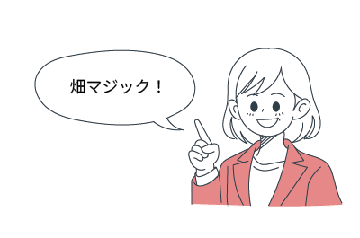
制作のポイント
こちらの挿絵は、iPad版Illustratorを使用して制作しました。この制作は、職業訓練校の課題として取り組んだ、実在の英会話スクールのWebサイトリニューアル提案プロジェクトの一部で、私はその中でWebサイト内で使用される挿絵全般の制作を担当しました。
英語の教科書や教材に馴染むような単色・ミニマルなスタイルを基調とし、学習の場面やサービス紹介に沿うイラストを多数制作しました。
同じ班のメンバーがWebデザイン・コーディング・実装を担当したサイト全体の提案は、残念ながら実際のリニューアルとしては採用されませんでしたが、制作した成果物としてのクオリティは十分にあり、以下のリンクからご覧いただけます。
制作過程では、マーケティングや導線設計などもグループで検討し、単なる制作演習に留まらない実践的な取り組みとなりました。